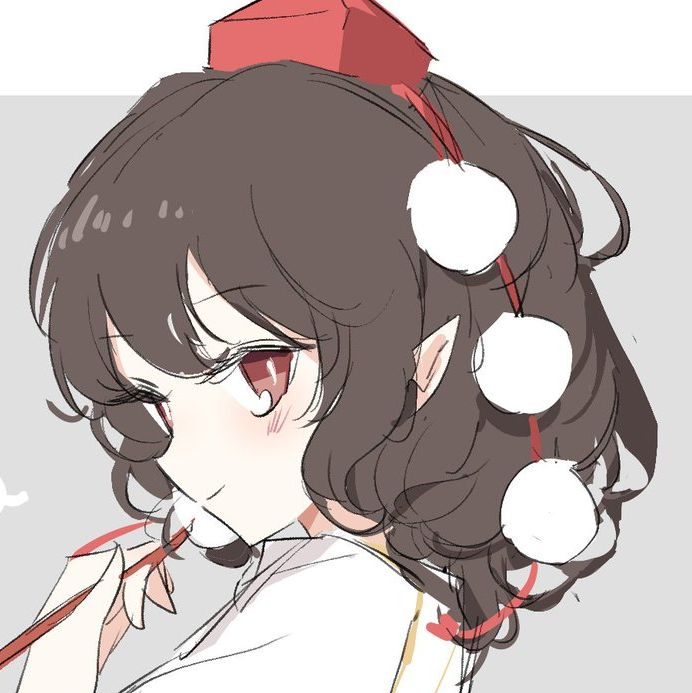

文文の图像转线稿器
ayayayayayayayayayayayayayayaya
📷
点击选择图片 或 拖拽到这里
PNG / JPG / WEBP · 建议人物立绘或头像
原图
-
线稿（透明底）
白底
-
🎯 叠加效果预览（线稿 + 原图）
原图透明度
50%
输出模式
线稿模式
主体填色
线条颜色
填充颜色
AI 自动识别人物轮廓（动漫/插画风优化）并把整个人物填满，背景透明。识别不准时可尝试重新 AI 识别。
重新 AI 识别
描边粗细
细节丰富度（越高线条越多越精细）
%
输出图片尺寸
和原图一样大
标准 · 1024px（生成快）
高清 · 2048px（推荐）
超清 · 3072px
极清 · 4096px（小图也能出精细线条）
✨ 生成线稿
🔄 重新渲染
💾 下载 PNG（透明底）